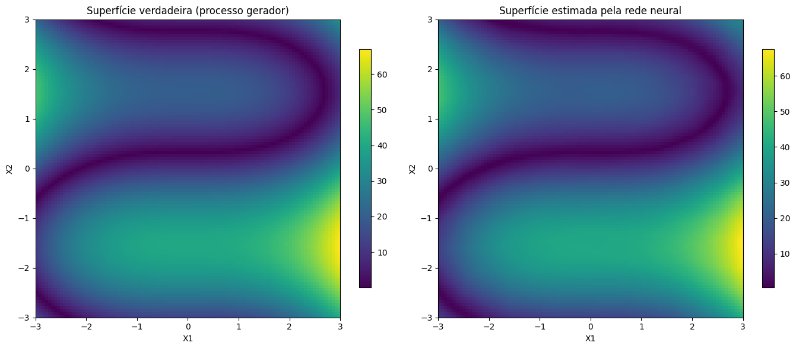
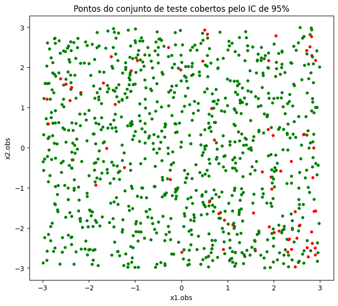

!pip install optunaLista 4
Para esta lista, utilizei o kernel do Colab no VSCode, para poder aproveitar do poder computacional de uma GPU, que não tenho no meu notebook
O Colab já tem quase todos os pacotes que necessito instalado, faltando apenas o optuna:
In [4]:
Carregando as bibliotecas
In [2]:
import pandas as pd
import torch
import torch.nn as nn
import torch.optim as optim
from torch.utils.data import TensorDataset, DataLoader
import optuna
import numpy as np
import random
import matplotlib.pyplot as plt
import seaborn as sns
import copyComo utilizei o kernel Colab, é muito mais simples hospedar os dados na nuvem, para que ele consiga buscá-los e ler diretamente.
In [3]:
df = pd.read_csv('https://raw.githubusercontent.com/penasta/rna1/refs/heads/main/dados/dados.csv')OBS: gerei estes dados no R, utilizando a seed sugerida pelo professor, para garantir a confiabilidade dos resultados.
O código para geração de dados idênticos se encontram neste link
Fazendo a separação treino-teste-validação como nas últimas listas, para comparabilidade
In [9]:
X = df[['x1.obs', 'x2.obs']].to_numpy().T
Y = df[['y']].to_numpy().T
x_treino = X[:, 0:8000]
x_val = X[:, 8000:9000]
x_teste = X[:, 9000:10000]
y_treino = Y[:, 0:8000]
y_val = Y[:, 8000:9000]
y_teste = Y[:, 9000:10000]Verificando os formatos
In [5]:
print("X:", X.shape)
print("Y:", Y.shape)
print("Treino:", x_treino.shape, y_treino.shape)
print("Validação:", x_val.shape, y_val.shape)
print("Teste:", x_teste.shape, y_teste.shape)X: (2, 100000)
Y: (1, 100000)
Treino: (2, 8000) (1, 8000)
Validação: (2, 1000) (1, 1000)
Teste: (2, 1000) (1, 1000)Item a)
In [6]:
x_treino_t = torch.tensor(x_treino.T, dtype=torch.float32)
y_treino_t = torch.tensor(y_treino.T, dtype=torch.float32).view(-1,1)
x_val_t = torch.tensor(x_val.T, dtype=torch.float32)
y_val_t = torch.tensor(y_val.T, dtype=torch.float32).view(-1,1)In [7]:
class SimpleNN(nn.Module):
def __init__(self):
super().__init__()
self.hidden = nn.Linear(2, 2)
self.out = nn.Linear(2, 1)
self.sigmoid = nn.Sigmoid()
nn.init.zeros_(self.hidden.weight)
nn.init.zeros_(self.hidden.bias)
nn.init.zeros_(self.out.weight)
nn.init.zeros_(self.out.bias)
def forward(self, x):
h = self.sigmoid(self.hidden(x))
y_hat = self.out(h)
return y_hatIn [8]:
Phi = SimpleNN()
criterion = nn.MSELoss()
optimizer = optim.SGD(Phi.parameters(), lr=0.1)
epochs = 100
losses_treino = []
losses_val = []
best_val_loss = np.inf
best_state = None
best_epoch = 0In [9]:
for epoch in range(epochs):
optimizer.zero_grad()
y_pred = Phi(x_treino_t)
train_loss = criterion(y_pred, y_treino_t)
train_loss.backward()
optimizer.step()
with torch.no_grad():
val_pred = Phi(x_val_t)
val_loss = criterion(val_pred, y_val_t)
losses_treino.append(train_loss.item())
losses_val.append(val_loss.item())
if val_loss.item() < best_val_loss:
best_val_loss = val_loss.item()
best_state = {k: v.clone() for k, v in Phi.state_dict().items()}
best_epoch = epoch + 1In [10]:
print(f"Melhor época (validação): {best_epoch}")
print(f"Melhor MSE de validação: {best_val_loss:.6f}")Melhor época (validação): 100
Melhor MSE de validação: 97.893570Estes resultados estranhamente diferem do gabarito, mas batem com os resultados que eu encontrei na lista 2. Então, se fiz algo errado lá, fiz exatamente igual nesta lista, pois bateram os resultados tanto no R como no Python; tornando os modelos comparáveis de alguma forma
Item b)
Configurações iniciais
In [11]:
SEED = 22025
torch.manual_seed(SEED)
np.random.seed(SEED)
random.seed(SEED)
n_optuna = 100
learning_rate = 0.001
qtd_epocas = 200
paciencia = 20
device = torch.device("cuda" if torch.cuda.is_available() else "cpu")
print("Device:", device)Device: cudaPreparando os dados para o Torch
In [12]:
def make_loaders(X_train, y_train, X_val, y_val, X_test, y_test, device):
X_train_t = torch.tensor(X_train.T, dtype=torch.float32).to(device)
y_train_t = torch.tensor(y_train.T, dtype=torch.float32).view(-1, 1).to(device)
X_val_t = torch.tensor(X_val.T, dtype=torch.float32).to(device)
y_val_t = torch.tensor(y_val.T, dtype=torch.float32).view(-1, 1).to(device)
X_test_t = torch.tensor(X_test.T, dtype=torch.float32).to(device)
y_test_t = torch.tensor(y_test.T, dtype=torch.float32).to(device).view(-1, 1)
train_loader = DataLoader(TensorDataset(X_train_t, y_train_t), batch_size=32, shuffle=True)
val_loader = DataLoader(TensorDataset(X_val_t, y_val_t), batch_size=64, shuffle=False)
test_loader = DataLoader(TensorDataset(X_test_t, y_test_t), batch_size=64)
return train_loader, val_loader, test_loaderIn [13]:
train_loader, val_loader, test_loader = make_loaders(x_treino, y_treino, x_val, y_val, x_teste, y_teste, device)Construindo a rede neural
In [14]:
def build_model(input_dim, hidden_layers, activation_name="relu", dropout=0.0):
layers = []
act = {
"relu": nn.ReLU()
}[activation_name]
prev_dim = input_dim
for h in hidden_layers:
layers.append(nn.Linear(prev_dim, h))
layers.append(act)
if dropout > 0:
layers.append(nn.Dropout(dropout))
prev_dim = h
layers.append(nn.Linear(prev_dim, 1))
return nn.Sequential(*layers).to(device)Definindo função objetivo do optuna para otimização de hiperparâmetros da rede
In [15]:
def objective(trial, train_loader, val_loader, input_dim):
n_layers = trial.suggest_int("n_layers", 2, 6)
hidden = [
trial.suggest_int(f"n_units_layer_{i}", 8, 256, log=True)
for i in range(n_layers)
]
dropout = trial.suggest_float("dropout", 0.0, 0.5)
weight_decay = trial.suggest_float("weight_decay", 1e-6, 1e-2, log=True)
lr = trial.suggest_float("lr", 3e-5, 3e-3, log=True)
model = build_model(
input_dim=input_dim,
hidden_layers=hidden,
activation_name="relu",
dropout=dropout
).to(device)
optimizer = optim.Adam(model.parameters(), lr=lr, weight_decay=weight_decay)
criterion = nn.MSELoss()
best_val = float("inf")
patience = paciencia
patience_count = 0
for epoch in range(qtd_epocas):
model.train()
for xb, yb in train_loader:
optimizer.zero_grad()
pred = model(xb)
loss = criterion(pred, yb)
loss.backward()
optimizer.step()
model.eval()
val_losses = []
with torch.no_grad():
for xb, yb in val_loader:
pred = model(xb)
val_losses.append(criterion(pred, yb).item())
val_mse = np.mean(val_losses)
if epoch % 5 == 0:
trial.report(val_mse, epoch)
if trial.should_prune():
raise optuna.TrialPruned()
if val_mse < best_val:
best_val = val_mse
patience_count = 0
else:
patience_count += 1
if patience_count >= patience:
break
return best_valOtimizando
In [16]:
pruner = optuna.pruners.HyperbandPruner()
study = optuna.create_study(direction="minimize", pruner=pruner)
study.optimize(lambda trial: objective(trial, train_loader, val_loader, input_dim=x_treino.shape[0]),
n_trials=n_optuna,
show_progress_bar=True)
print("Melhores hiperparâmetros:")
print(study.best_trial.params)[I 2025-11-23 02:36:57,320] A new study created in memory with name: no-name-c85d2280-74e1-45af-93e5-c19a8fcea5fd[I 2025-11-23 02:37:22,613] Trial 0 finished with value: 111.23853206634521 and parameters: {'n_layers': 6, 'n_units_layer_0': 163, 'n_units_layer_1': 126, 'n_units_layer_2': 9, 'n_units_layer_3': 22, 'n_units_layer_4': 43, 'n_units_layer_5': 14, 'dropout': 0.47935819802454194, 'weight_decay': 0.00018693781661057758, 'lr': 0.0007753603589791862}. Best is trial 0 with value: 111.23853206634521.
[I 2025-11-23 02:38:10,057] Trial 1 finished with value: 4.869601458311081 and parameters: {'n_layers': 3, 'n_units_layer_0': 65, 'n_units_layer_1': 82, 'n_units_layer_2': 15, 'dropout': 0.3022739617633364, 'weight_decay': 4.037145961447963e-06, 'lr': 0.001741569496790645}. Best is trial 1 with value: 4.869601458311081.
[I 2025-11-23 02:38:49,427] Trial 2 finished with value: 107.1932954788208 and parameters: {'n_layers': 6, 'n_units_layer_0': 131, 'n_units_layer_1': 9, 'n_units_layer_2': 87, 'n_units_layer_3': 10, 'n_units_layer_4': 23, 'n_units_layer_5': 23, 'dropout': 0.37498906325856457, 'weight_decay': 7.0850285475096515e-06, 'lr': 0.0002478855862293691}. Best is trial 1 with value: 4.869601458311081.
[I 2025-11-23 02:39:20,456] Trial 3 finished with value: 38.14531660079956 and parameters: {'n_layers': 5, 'n_units_layer_0': 165, 'n_units_layer_1': 111, 'n_units_layer_2': 70, 'n_units_layer_3': 219, 'n_units_layer_4': 24, 'dropout': 0.35781133019694217, 'weight_decay': 5.249253216117566e-06, 'lr': 5.541752218708039e-05}. Best is trial 1 with value: 4.869601458311081.
[I 2025-11-23 02:41:06,224] Trial 4 finished with value: 2.596485123038292 and parameters: {'n_layers': 3, 'n_units_layer_0': 82, 'n_units_layer_1': 169, 'n_units_layer_2': 8, 'dropout': 0.06765427372525029, 'weight_decay': 0.0008751609313247975, 'lr': 0.0001598064820033447}. Best is trial 4 with value: 2.596485123038292.
[I 2025-11-23 02:41:22,459] Trial 5 pruned.
[I 2025-11-23 02:41:25,892] Trial 6 pruned.
[I 2025-11-23 02:41:29,007] Trial 7 pruned.
[I 2025-11-23 02:41:32,483] Trial 8 pruned.
[I 2025-11-23 02:41:35,897] Trial 9 pruned.
[I 2025-11-23 02:43:08,149] Trial 10 finished with value: 17.7527534365654 and parameters: {'n_layers': 2, 'n_units_layer_0': 8, 'n_units_layer_1': 36, 'dropout': 0.005403369820202418, 'weight_decay': 0.006547138786729971, 'lr': 7.89405422559481e-05}. Best is trial 4 with value: 2.596485123038292.
[I 2025-11-23 02:43:11,197] Trial 11 pruned.
[I 2025-11-23 02:43:27,809] Trial 12 pruned.
[I 2025-11-23 02:44:19,009] Trial 13 finished with value: 2.7238475680351257 and parameters: {'n_layers': 3, 'n_units_layer_0': 79, 'n_units_layer_1': 96, 'n_units_layer_2': 8, 'dropout': 0.16370140642840897, 'weight_decay': 0.00014447326129793473, 'lr': 0.0029222255741136395}. Best is trial 4 with value: 2.596485123038292.
[I 2025-11-23 02:45:51,564] Trial 14 finished with value: 2.2709049582481384 and parameters: {'n_layers': 2, 'n_units_layer_0': 236, 'n_units_layer_1': 143, 'dropout': 0.15377776987848676, 'weight_decay': 0.00016684830410356572, 'lr': 0.00015339988551505348}. Best is trial 14 with value: 2.2709049582481384.
[I 2025-11-23 02:47:24,469] Trial 15 finished with value: 2.3764026388525963 and parameters: {'n_layers': 2, 'n_units_layer_0': 224, 'n_units_layer_1': 158, 'dropout': 0.06050916285930005, 'weight_decay': 0.0009208984024629657, 'lr': 0.00014494167312875133}. Best is trial 14 with value: 2.2709049582481384.
[I 2025-11-23 02:47:27,185] Trial 16 pruned.
[I 2025-11-23 02:47:29,885] Trial 17 pruned.
[I 2025-11-23 02:47:37,362] Trial 18 pruned.
[I 2025-11-23 02:48:17,025] Trial 19 pruned.
[I 2025-11-23 02:48:21,137] Trial 20 pruned.
[I 2025-11-23 02:48:23,955] Trial 21 pruned.
[I 2025-11-23 02:49:35,713] Trial 22 finished with value: 1.4792074039578438 and parameters: {'n_layers': 3, 'n_units_layer_0': 224, 'n_units_layer_1': 177, 'n_units_layer_2': 33, 'dropout': 0.07844299817724425, 'weight_decay': 0.0003862755598758188, 'lr': 0.00019045099531338352}. Best is trial 22 with value: 1.4792074039578438.
[I 2025-11-23 02:49:38,380] Trial 23 pruned.
[I 2025-11-23 02:50:53,729] Trial 24 finished with value: 1.3409594930708408 and parameters: {'n_layers': 3, 'n_units_layer_0': 243, 'n_units_layer_1': 251, 'n_units_layer_2': 35, 'dropout': 0.04011653320717895, 'weight_decay': 0.00034386489157846496, 'lr': 0.0002111064977308286}. Best is trial 24 with value: 1.3409594930708408.
[I 2025-11-23 02:52:01,205] Trial 25 finished with value: 1.1774947792291641 and parameters: {'n_layers': 4, 'n_units_layer_0': 141, 'n_units_layer_1': 250, 'n_units_layer_2': 36, 'n_units_layer_3': 66, 'dropout': 0.007299638573311257, 'weight_decay': 4.123901877439077e-05, 'lr': 0.00022634758488239846}. Best is trial 25 with value: 1.1774947792291641.
[I 2025-11-23 02:52:52,259] Trial 26 pruned.
[I 2025-11-23 02:53:34,900] Trial 27 finished with value: 1.7936875149607658 and parameters: {'n_layers': 4, 'n_units_layer_0': 107, 'n_units_layer_1': 198, 'n_units_layer_2': 26, 'n_units_layer_3': 27, 'dropout': 0.03734485961503834, 'weight_decay': 0.00039233088420413854, 'lr': 0.0004014094258827974}. Best is trial 25 with value: 1.1774947792291641.
[I 2025-11-23 02:54:15,232] Trial 28 finished with value: 1.613228090107441 and parameters: {'n_layers': 4, 'n_units_layer_0': 158, 'n_units_layer_1': 117, 'n_units_layer_2': 59, 'n_units_layer_3': 93, 'dropout': 0.08774424911140818, 'weight_decay': 3.640742890277112e-05, 'lr': 0.0006825574422950866}. Best is trial 25 with value: 1.1774947792291641.
[I 2025-11-23 02:54:56,828] Trial 29 finished with value: 1.2404045462608337 and parameters: {'n_layers': 5, 'n_units_layer_0': 177, 'n_units_layer_1': 212, 'n_units_layer_2': 31, 'n_units_layer_3': 39, 'n_units_layer_4': 211, 'dropout': 0.005314652140272255, 'weight_decay': 0.00012317033028720235, 'lr': 0.0010604017688530904}. Best is trial 25 with value: 1.1774947792291641.
[I 2025-11-23 02:55:24,140] Trial 30 finished with value: 1.41347885876894 and parameters: {'n_layers': 6, 'n_units_layer_0': 170, 'n_units_layer_1': 212, 'n_units_layer_2': 52, 'n_units_layer_3': 37, 'n_units_layer_4': 253, 'n_units_layer_5': 233, 'dropout': 0.0076285127515628715, 'weight_decay': 0.00010859040478679842, 'lr': 0.001037448712845061}. Best is trial 25 with value: 1.1774947792291641.
[I 2025-11-23 02:56:16,446] Trial 31 finished with value: 1.201463095843792 and parameters: {'n_layers': 6, 'n_units_layer_0': 159, 'n_units_layer_1': 209, 'n_units_layer_2': 57, 'n_units_layer_3': 39, 'n_units_layer_4': 252, 'n_units_layer_5': 204, 'dropout': 0.0003646078748754146, 'weight_decay': 0.00010530027746587731, 'lr': 0.000960635336266585}. Best is trial 25 with value: 1.1774947792291641.
[I 2025-11-23 02:56:24,198] Trial 32 pruned.
[I 2025-11-23 02:57:27,681] Trial 33 finished with value: 1.197617083787918 and parameters: {'n_layers': 5, 'n_units_layer_0': 95, 'n_units_layer_1': 255, 'n_units_layer_2': 52, 'n_units_layer_3': 31, 'n_units_layer_4': 109, 'dropout': 0.002520957796829966, 'weight_decay': 1.238894890478252e-05, 'lr': 0.0010442970047793963}. Best is trial 25 with value: 1.1774947792291641.
[I 2025-11-23 02:58:12,809] Trial 34 finished with value: 1.360861949622631 and parameters: {'n_layers': 5, 'n_units_layer_0': 97, 'n_units_layer_1': 135, 'n_units_layer_2': 112, 'n_units_layer_3': 38, 'n_units_layer_4': 119, 'dropout': 0.00948068184535328, 'weight_decay': 9.607130785421909e-06, 'lr': 0.0014530054147628463}. Best is trial 25 with value: 1.1774947792291641.
[I 2025-11-23 02:58:16,803] Trial 35 pruned.
[I 2025-11-23 02:58:21,021] Trial 36 pruned.
[I 2025-11-23 02:58:28,455] Trial 37 pruned.
[I 2025-11-23 02:58:36,393] Trial 38 pruned.
[I 2025-11-23 02:58:43,558] Trial 39 pruned.
[I 2025-11-23 02:59:06,176] Trial 40 pruned.
[I 2025-11-23 02:59:10,065] Trial 41 pruned.
[I 2025-11-23 02:59:13,960] Trial 42 pruned.
[I 2025-11-23 02:59:17,806] Trial 43 pruned.
[I 2025-11-23 02:59:40,283] Trial 44 pruned.
[I 2025-11-23 02:59:43,754] Trial 45 pruned.
[I 2025-11-23 03:00:00,520] Trial 46 pruned.
[I 2025-11-23 03:00:53,184] Trial 47 finished with value: 1.1852517761290073 and parameters: {'n_layers': 4, 'n_units_layer_0': 88, 'n_units_layer_1': 219, 'n_units_layer_2': 55, 'n_units_layer_3': 107, 'dropout': 0.00069481940927138, 'weight_decay': 0.0005071762006108344, 'lr': 0.0002463990159787332}. Best is trial 25 with value: 1.1774947792291641.
[I 2025-11-23 03:00:56,639] Trial 48 pruned.
[I 2025-11-23 03:01:41,484] Trial 49 finished with value: 1.4366165325045586 and parameters: {'n_layers': 5, 'n_units_layer_0': 83, 'n_units_layer_1': 213, 'n_units_layer_2': 101, 'n_units_layer_3': 47, 'n_units_layer_4': 53, 'dropout': 0.018563215031454947, 'weight_decay': 0.0012629406377915899, 'lr': 0.0022565254138578856}. Best is trial 25 with value: 1.1774947792291641.
[I 2025-11-23 03:01:45,353] Trial 50 pruned.
[I 2025-11-23 03:01:48,776] Trial 51 pruned.
[I 2025-11-23 03:01:55,117] Trial 52 pruned.
[I 2025-11-23 03:02:11,741] Trial 53 pruned.
[I 2025-11-23 03:02:15,992] Trial 54 pruned.
[I 2025-11-23 03:02:19,861] Trial 55 pruned.
[I 2025-11-23 03:02:23,357] Trial 56 pruned.
[I 2025-11-23 03:02:27,224] Trial 57 pruned.
[I 2025-11-23 03:02:34,019] Trial 58 pruned.
[I 2025-11-23 03:02:37,443] Trial 59 pruned.
[I 2025-11-23 03:02:41,277] Trial 60 pruned.
[I 2025-11-23 03:03:02,174] Trial 61 pruned.
[I 2025-11-23 03:03:06,372] Trial 62 pruned.
[I 2025-11-23 03:03:10,393] Trial 63 pruned.
[I 2025-11-23 03:03:14,779] Trial 64 pruned.
[I 2025-11-23 03:03:46,045] Trial 65 finished with value: 1.4443611428141594 and parameters: {'n_layers': 5, 'n_units_layer_0': 144, 'n_units_layer_1': 203, 'n_units_layer_2': 72, 'n_units_layer_3': 58, 'n_units_layer_4': 255, 'dropout': 0.015149354017342995, 'weight_decay': 3.7772570951906723e-06, 'lr': 0.0007278014556843749}. Best is trial 25 with value: 1.1774947792291641.
[I 2025-11-23 03:03:52,548] Trial 66 pruned.
[I 2025-11-23 03:03:56,874] Trial 67 pruned.
[I 2025-11-23 03:04:03,265] Trial 68 pruned.
[I 2025-11-23 03:04:06,346] Trial 69 pruned.
[I 2025-11-23 03:04:10,654] Trial 70 pruned.
[I 2025-11-23 03:04:18,475] Trial 71 pruned.
[I 2025-11-23 03:05:09,131] Trial 72 finished with value: 1.1382151767611504 and parameters: {'n_layers': 6, 'n_units_layer_0': 111, 'n_units_layer_1': 194, 'n_units_layer_2': 43, 'n_units_layer_3': 38, 'n_units_layer_4': 209, 'n_units_layer_5': 148, 'dropout': 0.00014918404137771214, 'weight_decay': 0.00014905195530893345, 'lr': 0.0010313311540572718}. Best is trial 72 with value: 1.1382151767611504.
[I 2025-11-23 03:05:31,851] Trial 73 pruned.
[I 2025-11-23 03:05:39,550] Trial 74 pruned.
[I 2025-11-23 03:06:13,225] Trial 75 finished with value: 1.270216278731823 and parameters: {'n_layers': 6, 'n_units_layer_0': 226, 'n_units_layer_1': 153, 'n_units_layer_2': 42, 'n_units_layer_3': 64, 'n_units_layer_4': 31, 'n_units_layer_5': 149, 'dropout': 0.00024684887807674763, 'weight_decay': 5.2690036884027915e-05, 'lr': 0.0009785336141515824}. Best is trial 72 with value: 1.1382151767611504.
[I 2025-11-23 03:06:17,590] Trial 76 pruned.
[I 2025-11-23 03:06:25,828] Trial 77 pruned.
[I 2025-11-23 03:06:53,909] Trial 78 finished with value: 1.2855982296168804 and parameters: {'n_layers': 6, 'n_units_layer_0': 149, 'n_units_layer_1': 176, 'n_units_layer_2': 63, 'n_units_layer_3': 80, 'n_units_layer_4': 14, 'n_units_layer_5': 171, 'dropout': 0.0003655629264687811, 'weight_decay': 0.00017769461279185038, 'lr': 0.0009999830737947334}. Best is trial 72 with value: 1.1382151767611504.
[I 2025-11-23 03:07:26,464] Trial 79 finished with value: 1.368452362716198 and parameters: {'n_layers': 6, 'n_units_layer_0': 157, 'n_units_layer_1': 97, 'n_units_layer_2': 68, 'n_units_layer_3': 85, 'n_units_layer_4': 10, 'n_units_layer_5': 167, 'dropout': 0.011682101862342153, 'weight_decay': 0.00017253018168384023, 'lr': 0.0009564637409667802}. Best is trial 72 with value: 1.1382151767611504.
[I 2025-11-23 03:07:31,133] Trial 80 pruned.
[I 2025-11-23 03:07:53,699] Trial 81 pruned.
[I 2025-11-23 03:08:20,494] Trial 82 finished with value: 1.5583667308092117 and parameters: {'n_layers': 6, 'n_units_layer_0': 238, 'n_units_layer_1': 175, 'n_units_layer_2': 54, 'n_units_layer_3': 70, 'n_units_layer_4': 32, 'n_units_layer_5': 143, 'dropout': 0.015328046080058813, 'weight_decay': 0.00011523061599396723, 'lr': 0.0011898909859175712}. Best is trial 72 with value: 1.1382151767611504.
[I 2025-11-23 03:08:43,052] Trial 83 pruned.
[I 2025-11-23 03:09:37,453] Trial 84 finished with value: 1.157666403800249 and parameters: {'n_layers': 6, 'n_units_layer_0': 175, 'n_units_layer_1': 207, 'n_units_layer_2': 36, 'n_units_layer_3': 51, 'n_units_layer_4': 16, 'n_units_layer_5': 185, 'dropout': 0.0006363124239062606, 'weight_decay': 0.0010018339937011536, 'lr': 0.0007519427021726063}. Best is trial 72 with value: 1.1382151767611504.
[I 2025-11-23 03:09:45,689] Trial 85 pruned.
[I 2025-11-23 03:09:50,016] Trial 86 pruned.
[I 2025-11-23 03:09:54,674] Trial 87 pruned.
[I 2025-11-23 03:10:17,443] Trial 88 pruned.
[I 2025-11-23 03:10:21,689] Trial 89 pruned.
[I 2025-11-23 03:10:26,222] Trial 90 pruned.
[I 2025-11-23 03:10:30,723] Trial 91 pruned.
[I 2025-11-23 03:10:35,018] Trial 92 pruned.
[I 2025-11-23 03:10:38,376] Trial 93 pruned.
[I 2025-11-23 03:10:42,061] Trial 94 pruned.
[I 2025-11-23 03:10:50,074] Trial 95 pruned.
[I 2025-11-23 03:10:53,766] Trial 96 pruned.
[I 2025-11-23 03:10:58,024] Trial 97 pruned.
[I 2025-11-23 03:11:02,246] Trial 98 pruned.
[I 2025-11-23 03:11:05,810] Trial 99 pruned.
Melhores hiperparâmetros:
{'n_layers': 6, 'n_units_layer_0': 111, 'n_units_layer_1': 194, 'n_units_layer_2': 43, 'n_units_layer_3': 38, 'n_units_layer_4': 209, 'n_units_layer_5': 148, 'dropout': 0.00014918404137771214, 'weight_decay': 0.00014905195530893345, 'lr': 0.0010313311540572718}Loop para treinar a rede com o melhor conjunto de hiperparâmetros
In [17]:
def train_and_eval(model, optimizer, criterion, train_loader=train_loader, val_loader=val_loader, n_epochs=qtd_epocas):
for epoch in range(n_epochs):
model.train()
for xb, yb in train_loader:
optimizer.zero_grad()
pred = model(xb)
loss = criterion(pred, yb)
loss.backward()
optimizer.step()
model.eval()
val_losses = []
with torch.no_grad():
for xb, yb in val_loader:
pred = model(xb)
val_losses.append(criterion(pred, yb).item())
return print(f"MSE no conjunto de validação: {np.mean(val_losses):.6f}")Re-treinando o modelo final com os melhores hiperparâmetros
In [19]:
best_params = study.best_trial.params
hidden = [best_params[f"n_units_layer_{i}"] for i in range(best_params["n_layers"])]
best_model = build_model(
input_dim=x_treino.shape[0],
hidden_layers=hidden,
activation_name="relu",
dropout=best_params["dropout"]
)
optimizer = optim.Adam(
best_model.parameters(),
lr=best_params["lr"],
weight_decay=best_params["weight_decay"]
)
criterion = nn.MSELoss()
train_and_eval(best_model, optimizer, criterion)MSE no conjunto de validação: 1.290015Avaliação final no conjunto de teste
In [20]:
best_model.eval()
test_losses = []
with torch.no_grad():
for xb, yb in test_loader:
pred = best_model(xb)
test_losses.append(((pred - yb)**2).mean().item())
final_test_mse = np.mean(test_losses)
print(f"MSE no conjunto de teste: {final_test_mse:.6f}")MSE no conjunto de teste: 1.442020Item c)
In [21]:
best_model.eval()
y_true = []
y_pred = []
with torch.no_grad():
for xb, yb in test_loader:
preds = best_model(xb)
y_true.extend(yb.cpu().numpy().flatten())
y_pred.extend(preds.cpu().numpy().flatten())In [22]:
df_plot = pd.DataFrame({
"y_true": y_true,
"y_pred": y_pred
})In [23]:
plt.figure(figsize=(6,6))
sns.scatterplot(x="y_true", y="y_pred", data=df_plot)
lims = [
min(df_plot.y_true.min(), df_plot.y_pred.min()),
max(df_plot.y_true.max(), df_plot.y_pred.max())
]
plt.plot(lims, lims, "--", linewidth=2)
plt.xlabel("Valor observado (yᵢ)")
plt.ylabel("Valor previsto (ŷᵢ)")
plt.title("Valores observados vs. previstos no conjunto de teste")
plt.grid(True)
plt.show()
Na lista anterior, o gráfico de valores observados vs previstos apresentava sérias limitações e imperfeições em relação a linha de 45 graus esperada. Existia um limite inferior e superior que as predições não conseguiam ultrapassar. Desta vez, a rede praticamente crava com os verdadeiros valores.
Item d)
In [24]:
best_model.eval()
x_input = torch.tensor([[1.0, 1.0]], dtype=torch.float32).to(device)
with torch.no_grad():
y_pred = best_model(x_input)
print("Predição para (x1=1, x2=1):", y_pred.item())Predição para (x1=1, x2=1): 14.711983680725098Note: O valor analítico neste caso seria \(Y \sim N(\mu,1)\), onde \(\mu= |1^3 - 30*sin(1) + 10| \approx 14,24413\). Pode-se dizer que a rede cravou!
item e)
In [25]:
n = 100
x1_lin = np.linspace(-3, 3, n)
x2_lin = np.linspace(-3, 3, n)
X1g, X2g = np.meshgrid(x1_lin, x2_lin)
Y_true = np.abs(X1g**3 - 30*np.sin(X2g) + 10)
grid_points = np.column_stack([X1g.ravel(), X2g.ravel()])
grid_tensor = torch.tensor(grid_points, dtype=torch.float32).to(device)
best_model.eval()
with torch.no_grad():
y_grid_pred = best_model(grid_tensor).cpu().numpy().flatten()
Y_pred = y_grid_pred.reshape(n, n)
fig, axes = plt.subplots(1, 2, figsize=(14, 6))
im0 = axes[0].imshow(
Y_true,
extent=[-3, 3, -3, 3],
origin="lower",
cmap="viridis",
aspect="auto"
)
axes[0].set_title("Superfície verdadeira (processo gerador)")
axes[0].set_xlabel("X1")
axes[0].set_ylabel("X2")
fig.colorbar(im0, ax=axes[0], shrink=0.8)
im1 = axes[1].imshow(
Y_pred,
extent=[-3, 3, -3, 3],
origin="lower",
cmap="viridis",
aspect="auto"
)
axes[1].set_title("Superfície estimada pela rede neural")
axes[1].set_xlabel("X1")
axes[1].set_ylabel("X2")
fig.colorbar(im1, ax=axes[1], shrink=0.8)
plt.tight_layout()
plt.show()
Pela comparação visual dos gráficos, pode-se observar que a rede praticamente aprendeu o processo gerador, sendo até difícil apontar, sem a legenda, qual o gráfico do processo gerador e qual o gráfico dos valores estimados pela rede
item f)
In [26]:
best_model.eval()
val_losses = []
criterion = nn.MSELoss()
X_test_list = []
y_test_list = []
for xb, yb in test_loader:
X_test_list.append(xb)
y_test_list.append(yb)
X_test_t = torch.cat(X_test_list, dim=0)
y_test_t = torch.cat(y_test_list, dim=0)
with torch.no_grad():
for xb, yb in val_loader:
pred = best_model(xb)
loss = criterion(pred, yb)
val_losses.append(loss.item())
val_mse = np.mean(val_losses)
sigma_hat = np.sqrt(val_mse)
with torch.no_grad():
y_pred_test = best_model(X_test_t).cpu().numpy().flatten()
y_true_test = y_test_t.cpu().numpy().flatten()
x1_test = X_test_t[:, 0].cpu().numpy()
x2_test = X_test_t[:, 1].cpu().numpy()
lower = y_pred_test - 1.96 * sigma_hat
upper = y_pred_test + 1.96 * sigma_hat
captured = (y_true_test >= lower) & (y_true_test <= upper)
plt.figure(figsize=(8, 7))
plt.scatter(
x1_test,
x2_test,
c=np.where(captured, "green", "red"),
s=12
)
plt.xlabel("x1.obs")
plt.ylabel("x2.obs")
plt.title("Pontos do conjunto de teste cobertos pelo IC de 95%")
plt.show()
Desta vez, não temos mais problemas de ajuste local como no modelo linear da lista anterior. Lá, o modelo, mesmo com um intervalo de confiança gigantesco, não conseguia capturar os valores nas regiões em que os verdadeiros valores eram mais extremos.
Note:
In [27]:
sigma_hat*1.96np.float64(2.226144950591428)Ou seja, o intervalo de confiança 95% da rede é minúsculo, e ainda assim consegue capturar praticamente todos os valores, com os residuais sem nenhum padrão aparente de falta de ajuste local.
Item g)
Treinando a rede com apenas x1
In [28]:
X1_train = x_treino[[0], :]
X1_val = x_val[[0], :]
X1_test = x_teste[[0], :]
train_loader_x1, val_loader_x1, test_loader_x1 = make_loaders(
X1_train, y_treino,
X1_val, y_val,
X1_test, y_teste,
device
)
study_x1 = optuna.create_study(direction="minimize")
study_x1.optimize(lambda trial:
objective(trial, train_loader_x1, val_loader_x1, input_dim=X1_train.shape[0]),
n_trials=n_optuna
)[I 2025-11-23 03:16:07,607] A new study created in memory with name: no-name-55691faa-a64c-484c-9364-2fbafffd216e
[I 2025-11-23 03:16:40,008] Trial 0 finished with value: 178.62500381469727 and parameters: {'n_layers': 3, 'n_units_layer_0': 42, 'n_units_layer_1': 18, 'n_units_layer_2': 22, 'dropout': 0.10312466333903969, 'weight_decay': 0.0010879897615653437, 'lr': 0.00012026228619369936}. Best is trial 0 with value: 178.62500381469727.
[I 2025-11-23 03:17:09,806] Trial 1 finished with value: 178.75168132781982 and parameters: {'n_layers': 3, 'n_units_layer_0': 73, 'n_units_layer_1': 14, 'n_units_layer_2': 124, 'dropout': 0.1495167638625487, 'weight_decay': 0.007100953747262681, 'lr': 6.0323756889108536e-05}. Best is trial 0 with value: 178.62500381469727.
[I 2025-11-23 03:17:28,109] Trial 2 finished with value: 185.38785552978516 and parameters: {'n_layers': 5, 'n_units_layer_0': 67, 'n_units_layer_1': 23, 'n_units_layer_2': 136, 'n_units_layer_3': 18, 'n_units_layer_4': 214, 'dropout': 0.2770624483537051, 'weight_decay': 6.6507986384998e-05, 'lr': 8.06415998909493e-05}. Best is trial 0 with value: 178.62500381469727.
[I 2025-11-23 03:17:58,863] Trial 3 finished with value: 181.64008140563965 and parameters: {'n_layers': 2, 'n_units_layer_0': 14, 'n_units_layer_1': 136, 'dropout': 0.37806566671588654, 'weight_decay': 0.0013954610233347573, 'lr': 7.172608426152178e-05}. Best is trial 0 with value: 178.62500381469727.
[I 2025-11-23 03:18:26,429] Trial 4 finished with value: 178.5407543182373 and parameters: {'n_layers': 4, 'n_units_layer_0': 41, 'n_units_layer_1': 101, 'n_units_layer_2': 22, 'n_units_layer_3': 47, 'dropout': 0.012283069649171585, 'weight_decay': 0.0009513363710136085, 'lr': 8.824501070446526e-05}. Best is trial 4 with value: 178.5407543182373.
[I 2025-11-23 03:18:30,185] Trial 5 pruned.
[I 2025-11-23 03:19:38,440] Trial 6 finished with value: 177.4204978942871 and parameters: {'n_layers': 5, 'n_units_layer_0': 119, 'n_units_layer_1': 213, 'n_units_layer_2': 242, 'n_units_layer_3': 119, 'n_units_layer_4': 196, 'dropout': 0.3842833159586791, 'weight_decay': 4.890935609726582e-05, 'lr': 0.0012776238972712192}. Best is trial 6 with value: 177.4204978942871.
[I 2025-11-23 03:20:04,675] Trial 7 pruned.
[I 2025-11-23 03:20:07,884] Trial 8 pruned.
[I 2025-11-23 03:20:39,433] Trial 9 finished with value: 178.23285293579102 and parameters: {'n_layers': 6, 'n_units_layer_0': 205, 'n_units_layer_1': 42, 'n_units_layer_2': 204, 'n_units_layer_3': 33, 'n_units_layer_4': 85, 'n_units_layer_5': 14, 'dropout': 0.2498599150894939, 'weight_decay': 0.003939038873515144, 'lr': 0.0010435998041833777}. Best is trial 6 with value: 177.4204978942871.
[I 2025-11-23 03:20:43,589] Trial 10 pruned.
[I 2025-11-23 03:20:55,161] Trial 11 pruned.
[I 2025-11-23 03:21:42,299] Trial 12 pruned.
[I 2025-11-23 03:21:46,605] Trial 13 pruned.
[I 2025-11-23 03:21:50,707] Trial 14 pruned.
[I 2025-11-23 03:21:55,149] Trial 15 pruned.
[I 2025-11-23 03:22:20,462] Trial 16 finished with value: 178.43397617340088 and parameters: {'n_layers': 5, 'n_units_layer_0': 92, 'n_units_layer_1': 74, 'n_units_layer_2': 94, 'n_units_layer_3': 32, 'n_units_layer_4': 243, 'dropout': 0.3158930311059203, 'weight_decay': 0.00016841975458912163, 'lr': 0.0014388853774735077}. Best is trial 6 with value: 177.4204978942871.
[I 2025-11-23 03:22:28,724] Trial 17 pruned.
[I 2025-11-23 03:22:38,341] Trial 18 pruned.
[I 2025-11-23 03:22:47,692] Trial 19 pruned.
[I 2025-11-23 03:23:08,319] Trial 20 finished with value: 178.50289821624756 and parameters: {'n_layers': 5, 'n_units_layer_0': 199, 'n_units_layer_1': 12, 'n_units_layer_2': 169, 'n_units_layer_3': 225, 'n_units_layer_4': 17, 'dropout': 0.30858096110101435, 'weight_decay': 0.00029605703142360955, 'lr': 0.0020160888840933607}. Best is trial 6 with value: 177.4204978942871.
[I 2025-11-23 03:23:50,917] Trial 21 finished with value: 178.15628242492676 and parameters: {'n_layers': 5, 'n_units_layer_0': 102, 'n_units_layer_1': 63, 'n_units_layer_2': 88, 'n_units_layer_3': 30, 'n_units_layer_4': 216, 'dropout': 0.3234726972143518, 'weight_decay': 0.00017173466290836914, 'lr': 0.0016730547417964177}. Best is trial 6 with value: 177.4204978942871.
[I 2025-11-23 03:23:54,723] Trial 22 pruned.
[I 2025-11-23 03:24:39,904] Trial 23 finished with value: 177.95211505889893 and parameters: {'n_layers': 6, 'n_units_layer_0': 106, 'n_units_layer_1': 119, 'n_units_layer_2': 112, 'n_units_layer_3': 36, 'n_units_layer_4': 66, 'n_units_layer_5': 235, 'dropout': 0.2274979193507701, 'weight_decay': 0.0029541848459352215, 'lr': 0.0008049544889291096}. Best is trial 6 with value: 177.4204978942871.
[I 2025-11-23 03:25:17,074] Trial 24 finished with value: 178.30269718170166 and parameters: {'n_layers': 5, 'n_units_layer_0': 95, 'n_units_layer_1': 117, 'n_units_layer_2': 57, 'n_units_layer_3': 62, 'n_units_layer_4': 245, 'dropout': 0.1841808367750687, 'weight_decay': 0.00046279620025293166, 'lr': 0.0006043616637611359}. Best is trial 6 with value: 177.4204978942871.
[I 2025-11-23 03:25:21,352] Trial 25 pruned.
[I 2025-11-23 03:25:25,669] Trial 26 pruned.
[I 2025-11-23 03:25:33,486] Trial 27 pruned.
[I 2025-11-23 03:25:46,189] Trial 28 finished with value: 178.63681316375732 and parameters: {'n_layers': 4, 'n_units_layer_0': 114, 'n_units_layer_1': 148, 'n_units_layer_2': 119, 'n_units_layer_3': 45, 'dropout': 0.1515534912100564, 'weight_decay': 7.121465336275067e-06, 'lr': 0.001604555725054635}. Best is trial 6 with value: 177.4204978942871.
[I 2025-11-23 03:26:06,650] Trial 29 finished with value: 178.54830265045166 and parameters: {'n_layers': 2, 'n_units_layer_0': 123, 'n_units_layer_1': 105, 'dropout': 0.22791610327065914, 'weight_decay': 2.308918336248992e-06, 'lr': 0.00047360526695302304}. Best is trial 6 with value: 177.4204978942871.
[I 2025-11-23 03:26:17,915] Trial 30 pruned.
[I 2025-11-23 03:26:29,673] Trial 31 pruned.
[I 2025-11-23 03:26:34,175] Trial 32 pruned.
[I 2025-11-23 03:26:38,357] Trial 33 pruned.
[I 2025-11-23 03:26:39,075] Trial 34 pruned.
[I 2025-11-23 03:26:53,086] Trial 35 pruned.
[I 2025-11-23 03:26:53,819] Trial 36 pruned.
[I 2025-11-23 03:26:54,482] Trial 37 pruned.
[I 2025-11-23 03:27:07,315] Trial 38 pruned.
[I 2025-11-23 03:27:12,003] Trial 39 pruned.
[I 2025-11-23 03:27:19,223] Trial 40 pruned.
[I 2025-11-23 03:27:33,753] Trial 41 pruned.
[I 2025-11-23 03:27:41,392] Trial 42 pruned.
[I 2025-11-23 03:27:54,325] Trial 43 pruned.
[I 2025-11-23 03:27:55,061] Trial 44 pruned.
[I 2025-11-23 03:28:05,900] Trial 45 pruned.
[I 2025-11-23 03:28:23,086] Trial 46 finished with value: 178.49519443511963 and parameters: {'n_layers': 2, 'n_units_layer_0': 21, 'n_units_layer_1': 71, 'dropout': 0.17818795400477702, 'weight_decay': 0.004517601526482317, 'lr': 0.0008694151374799597}. Best is trial 6 with value: 177.4204978942871.
[I 2025-11-23 03:28:35,961] Trial 47 pruned.
[I 2025-11-23 03:29:27,890] Trial 48 pruned.
[I 2025-11-23 03:29:28,553] Trial 49 pruned.
[I 2025-11-23 03:29:33,252] Trial 50 pruned.
[I 2025-11-23 03:29:37,135] Trial 51 pruned.
[I 2025-11-23 03:29:37,813] Trial 52 pruned.
[I 2025-11-23 03:30:26,459] Trial 53 pruned.
[I 2025-11-23 03:30:30,545] Trial 54 pruned.
[I 2025-11-23 03:30:31,497] Trial 55 pruned.
[I 2025-11-23 03:30:44,473] Trial 56 pruned.
[I 2025-11-23 03:30:45,151] Trial 57 pruned.
[I 2025-11-23 03:31:06,393] Trial 58 finished with value: 178.32075214385986 and parameters: {'n_layers': 4, 'n_units_layer_0': 36, 'n_units_layer_1': 9, 'n_units_layer_2': 90, 'n_units_layer_3': 43, 'dropout': 0.19576524041064067, 'weight_decay': 0.00015697935176926908, 'lr': 0.0017129526755025012}. Best is trial 6 with value: 177.4204978942871.
[I 2025-11-23 03:31:45,166] Trial 59 pruned.
[I 2025-11-23 03:31:45,757] Trial 60 pruned.
[I 2025-11-23 03:31:49,299] Trial 61 pruned.
[I 2025-11-23 03:31:56,257] Trial 62 pruned.
[I 2025-11-23 03:31:56,854] Trial 63 pruned.
[I 2025-11-23 03:32:04,029] Trial 64 pruned.
[I 2025-11-23 03:32:31,091] Trial 65 finished with value: 178.403000831604 and parameters: {'n_layers': 6, 'n_units_layer_0': 156, 'n_units_layer_1': 216, 'n_units_layer_2': 155, 'n_units_layer_3': 110, 'n_units_layer_4': 208, 'n_units_layer_5': 166, 'dropout': 0.2716388730858138, 'weight_decay': 0.00024008089357927602, 'lr': 0.0009307527396853828}. Best is trial 6 with value: 177.4204978942871.
[I 2025-11-23 03:33:24,249] Trial 66 pruned.
[I 2025-11-23 03:33:32,643] Trial 67 pruned.
[I 2025-11-23 03:33:37,043] Trial 68 pruned.
[I 2025-11-23 03:33:37,794] Trial 69 pruned.
[I 2025-11-23 03:33:49,489] Trial 70 pruned.
[I 2025-11-23 03:33:50,243] Trial 71 pruned.
[I 2025-11-23 03:33:58,003] Trial 72 pruned.
[I 2025-11-23 03:34:01,959] Trial 73 pruned.
[I 2025-11-23 03:34:06,728] Trial 74 pruned.
[I 2025-11-23 03:34:07,392] Trial 75 pruned.
[I 2025-11-23 03:34:11,851] Trial 76 pruned.
[I 2025-11-23 03:34:12,535] Trial 77 pruned.
[I 2025-11-23 03:34:46,101] Trial 78 finished with value: 178.26263427734375 and parameters: {'n_layers': 6, 'n_units_layer_0': 154, 'n_units_layer_1': 85, 'n_units_layer_2': 43, 'n_units_layer_3': 148, 'n_units_layer_4': 177, 'n_units_layer_5': 125, 'dropout': 0.18012757988093075, 'weight_decay': 0.00015957098116487018, 'lr': 0.0011463531344761222}. Best is trial 6 with value: 177.4204978942871.
[I 2025-11-23 03:34:46,838] Trial 79 pruned.
[I 2025-11-23 03:35:13,342] Trial 80 finished with value: 178.29713821411133 and parameters: {'n_layers': 6, 'n_units_layer_0': 157, 'n_units_layer_1': 94, 'n_units_layer_2': 41, 'n_units_layer_3': 209, 'n_units_layer_4': 75, 'n_units_layer_5': 190, 'dropout': 0.17892753026961036, 'weight_decay': 2.204067132722801e-05, 'lr': 0.0008022963570130505}. Best is trial 6 with value: 177.4204978942871.
[I 2025-11-23 03:35:18,041] Trial 81 pruned.
[I 2025-11-23 03:35:33,509] Trial 82 finished with value: 178.56835460662842 and parameters: {'n_layers': 6, 'n_units_layer_0': 135, 'n_units_layer_1': 163, 'n_units_layer_2': 40, 'n_units_layer_3': 196, 'n_units_layer_4': 93, 'n_units_layer_5': 122, 'dropout': 0.17680817265565824, 'weight_decay': 1.6811525594716027e-05, 'lr': 0.0006137042844670585}. Best is trial 6 with value: 177.4204978942871.
[I 2025-11-23 03:35:41,753] Trial 83 pruned.
[I 2025-11-23 03:36:33,550] Trial 84 finished with value: 178.1695432662964 and parameters: {'n_layers': 6, 'n_units_layer_0': 236, 'n_units_layer_1': 227, 'n_units_layer_2': 54, 'n_units_layer_3': 172, 'n_units_layer_4': 83, 'n_units_layer_5': 191, 'dropout': 0.20000978978519943, 'weight_decay': 2.00081347246044e-05, 'lr': 0.0008022089900642401}. Best is trial 6 with value: 177.4204978942871.
[I 2025-11-23 03:36:37,860] Trial 85 pruned.
[I 2025-11-23 03:36:42,554] Trial 86 pruned.
[I 2025-11-23 03:36:50,733] Trial 87 pruned.
[I 2025-11-23 03:36:58,683] Trial 88 pruned.
[I 2025-11-23 03:37:22,170] Trial 89 finished with value: 178.46107864379883 and parameters: {'n_layers': 6, 'n_units_layer_0': 26, 'n_units_layer_1': 34, 'n_units_layer_2': 63, 'n_units_layer_3': 217, 'n_units_layer_4': 62, 'n_units_layer_5': 205, 'dropout': 0.20556353398640334, 'weight_decay': 0.00959975973517806, 'lr': 0.0016204650449063173}. Best is trial 6 with value: 177.4204978942871.
[I 2025-11-23 03:37:22,905] Trial 90 pruned.
[I 2025-11-23 03:37:23,641] Trial 91 pruned.
[I 2025-11-23 03:38:16,514] Trial 92 pruned.
[I 2025-11-23 03:38:45,111] Trial 93 finished with value: 178.35966777801514 and parameters: {'n_layers': 6, 'n_units_layer_0': 106, 'n_units_layer_1': 93, 'n_units_layer_2': 40, 'n_units_layer_3': 89, 'n_units_layer_4': 86, 'n_units_layer_5': 107, 'dropout': 0.16769400448499067, 'weight_decay': 0.000161221752042755, 'lr': 0.0012949715793689612}. Best is trial 6 with value: 177.4204978942871.
[I 2025-11-23 03:38:45,866] Trial 94 pruned.
[I 2025-11-23 03:39:08,971] Trial 95 finished with value: 178.44206142425537 and parameters: {'n_layers': 6, 'n_units_layer_0': 108, 'n_units_layer_1': 104, 'n_units_layer_2': 40, 'n_units_layer_3': 130, 'n_units_layer_4': 65, 'n_units_layer_5': 102, 'dropout': 0.16718624128661427, 'weight_decay': 8.67038092002619e-05, 'lr': 0.0012821082567204475}. Best is trial 6 with value: 177.4204978942871.
[I 2025-11-23 03:39:09,575] Trial 96 pruned.
[I 2025-11-23 03:39:10,322] Trial 97 pruned.
[I 2025-11-23 03:39:10,993] Trial 98 pruned.
[I 2025-11-23 03:39:19,348] Trial 99 pruned. Treinando a rede com apenas x2
In [29]:
X2_train = x_treino[[1], :]
X2_val = x_val[[1], :]
X2_test = x_teste[[1], :]
train_loader_x2, val_loader_x2, test_loader_x2 = make_loaders(
X2_train, y_treino,
X2_val, y_val,
X2_test, y_teste,
device
)
study_x2 = optuna.create_study(direction="minimize")
study_x2.optimize(lambda trial:
objective(trial, train_loader_x2, val_loader_x2, input_dim=X2_train.shape[0]),
n_trials=n_optuna
)[I 2025-11-23 03:39:19,743] A new study created in memory with name: no-name-fd7b1090-f6dd-4bc1-bf99-f21c2d121918
[I 2025-11-23 03:39:48,346] Trial 0 finished with value: 85.68573713302612 and parameters: {'n_layers': 2, 'n_units_layer_0': 138, 'n_units_layer_1': 123, 'dropout': 0.20595384247829235, 'weight_decay': 0.0008509846813019364, 'lr': 0.0020327241132813063}. Best is trial 0 with value: 85.68573713302612.
[I 2025-11-23 03:40:32,609] Trial 1 finished with value: 86.50057935714722 and parameters: {'n_layers': 5, 'n_units_layer_0': 13, 'n_units_layer_1': 92, 'n_units_layer_2': 8, 'n_units_layer_3': 66, 'n_units_layer_4': 70, 'dropout': 0.09214993707513353, 'weight_decay': 0.0003712506768139803, 'lr': 0.00027205653661023705}. Best is trial 0 with value: 85.68573713302612.
[I 2025-11-23 03:41:12,021] Trial 2 finished with value: 88.4015383720398 and parameters: {'n_layers': 3, 'n_units_layer_0': 52, 'n_units_layer_1': 22, 'n_units_layer_2': 13, 'dropout': 0.3685885346527223, 'weight_decay': 2.512854951522331e-06, 'lr': 0.0009326306434034403}. Best is trial 0 with value: 85.68573713302612.
[I 2025-11-23 03:42:55,062] Trial 3 finished with value: 103.34612894058228 and parameters: {'n_layers': 6, 'n_units_layer_0': 10, 'n_units_layer_1': 77, 'n_units_layer_2': 20, 'n_units_layer_3': 153, 'n_units_layer_4': 52, 'n_units_layer_5': 39, 'dropout': 0.30328549343252076, 'weight_decay': 0.0007337870306307221, 'lr': 4.444793319002086e-05}. Best is trial 0 with value: 85.68573713302612.
[I 2025-11-23 03:43:34,625] Trial 4 finished with value: 113.65493726730347 and parameters: {'n_layers': 6, 'n_units_layer_0': 66, 'n_units_layer_1': 41, 'n_units_layer_2': 80, 'n_units_layer_3': 63, 'n_units_layer_4': 9, 'n_units_layer_5': 213, 'dropout': 0.22725674995441714, 'weight_decay': 0.0020372657015744556, 'lr': 0.00014864015282916367}. Best is trial 0 with value: 85.68573713302612.
[I 2025-11-23 03:43:38,115] Trial 5 pruned.
[I 2025-11-23 03:43:38,776] Trial 6 pruned.
[I 2025-11-23 03:44:27,892] Trial 7 finished with value: 86.2149977684021 and parameters: {'n_layers': 4, 'n_units_layer_0': 143, 'n_units_layer_1': 28, 'n_units_layer_2': 11, 'n_units_layer_3': 59, 'dropout': 0.1467557210245214, 'weight_decay': 0.0004392199890554224, 'lr': 0.0007289721150044305}. Best is trial 0 with value: 85.68573713302612.
[I 2025-11-23 03:44:28,415] Trial 8 pruned.
[I 2025-11-23 03:44:28,879] Trial 9 pruned.
[I 2025-11-23 03:44:53,362] Trial 10 finished with value: 85.63528490066528 and parameters: {'n_layers': 2, 'n_units_layer_0': 233, 'n_units_layer_1': 256, 'dropout': 0.20859295454429722, 'weight_decay': 0.0077349439635655826, 'lr': 0.002982843754272008}. Best is trial 10 with value: 85.63528490066528.
[I 2025-11-23 03:45:17,493] Trial 11 finished with value: 86.09874200820923 and parameters: {'n_layers': 2, 'n_units_layer_0': 241, 'n_units_layer_1': 232, 'dropout': 0.20594780506762064, 'weight_decay': 0.009325207638009762, 'lr': 0.0028464319006021857}. Best is trial 10 with value: 85.63528490066528.
[I 2025-11-23 03:45:34,871] Trial 12 finished with value: 85.97704076766968 and parameters: {'n_layers': 2, 'n_units_layer_0': 240, 'n_units_layer_1': 246, 'dropout': 0.17310904999951154, 'weight_decay': 0.006948979745539725, 'lr': 0.0029665209735552285}. Best is trial 10 with value: 85.63528490066528.
[I 2025-11-23 03:46:17,644] Trial 13 finished with value: 85.37071561813354 and parameters: {'n_layers': 3, 'n_units_layer_0': 117, 'n_units_layer_1': 175, 'n_units_layer_2': 236, 'dropout': 0.28357281607259727, 'weight_decay': 0.0024174703505982684, 'lr': 0.0014377170725941072}. Best is trial 13 with value: 85.37071561813354.
[I 2025-11-23 03:46:18,303] Trial 14 pruned.
[I 2025-11-23 03:46:45,309] Trial 15 finished with value: 85.69456887245178 and parameters: {'n_layers': 3, 'n_units_layer_0': 105, 'n_units_layer_1': 181, 'n_units_layer_2': 71, 'dropout': 0.1206809222354403, 'weight_decay': 1.7249786292659435e-05, 'lr': 0.0014906992346689657}. Best is trial 13 with value: 85.37071561813354.
[I 2025-11-23 03:46:45,880] Trial 16 pruned.
[I 2025-11-23 03:46:46,346] Trial 17 pruned.
[I 2025-11-23 03:46:46,951] Trial 18 pruned.
[I 2025-11-23 03:46:47,550] Trial 19 pruned.
[I 2025-11-23 03:46:48,108] Trial 20 pruned.
[I 2025-11-23 03:46:48,578] Trial 21 pruned.
[I 2025-11-23 03:46:49,059] Trial 22 pruned.
[I 2025-11-23 03:46:49,532] Trial 23 pruned.
[I 2025-11-23 03:47:26,343] Trial 24 finished with value: 85.71111989021301 and parameters: {'n_layers': 3, 'n_units_layer_0': 225, 'n_units_layer_1': 57, 'n_units_layer_2': 65, 'dropout': 0.1367477979564669, 'weight_decay': 0.0011189538289713779, 'lr': 0.0017216859728514486}. Best is trial 13 with value: 85.37071561813354.
[I 2025-11-23 03:47:49,780] Trial 25 finished with value: 85.93063545227051 and parameters: {'n_layers': 2, 'n_units_layer_0': 137, 'n_units_layer_1': 201, 'dropout': 0.24383643569775662, 'weight_decay': 0.004768033439668063, 'lr': 0.002854265122488402}. Best is trial 13 with value: 85.37071561813354.
[I 2025-11-23 03:48:03,298] Trial 26 finished with value: 85.8959059715271 and parameters: {'n_layers': 3, 'n_units_layer_0': 89, 'n_units_layer_1': 140, 'n_units_layer_2': 146, 'dropout': 0.18693751737413367, 'weight_decay': 4.139467605769512e-05, 'lr': 0.0011176715513887684}. Best is trial 13 with value: 85.37071561813354.
[I 2025-11-23 03:48:03,784] Trial 27 pruned.
[I 2025-11-23 03:48:04,258] Trial 28 pruned.
[I 2025-11-23 03:48:30,036] Trial 29 finished with value: 86.33077549934387 and parameters: {'n_layers': 5, 'n_units_layer_0': 17, 'n_units_layer_1': 146, 'n_units_layer_2': 106, 'n_units_layer_3': 22, 'n_units_layer_4': 255, 'dropout': 0.09820038014869395, 'weight_decay': 0.0009204069921250355, 'lr': 0.0023144771138776895}. Best is trial 13 with value: 85.37071561813354.
[I 2025-11-23 03:48:33,378] Trial 30 pruned.
[I 2025-11-23 03:48:36,504] Trial 31 pruned.
[I 2025-11-23 03:48:37,042] Trial 32 pruned.
[I 2025-11-23 03:48:37,701] Trial 33 pruned.
[I 2025-11-23 03:48:38,243] Trial 34 pruned.
[I 2025-11-23 03:48:38,848] Trial 35 pruned.
[I 2025-11-23 03:48:39,323] Trial 36 pruned.
[I 2025-11-23 03:48:39,919] Trial 37 pruned.
[I 2025-11-23 03:48:40,493] Trial 38 pruned.
[I 2025-11-23 03:48:41,338] Trial 39 pruned.
[I 2025-11-23 03:48:42,335] Trial 40 pruned.
[I 2025-11-23 03:48:42,880] Trial 41 pruned.
[I 2025-11-23 03:49:06,515] Trial 42 finished with value: 86.02818465232849 and parameters: {'n_layers': 3, 'n_units_layer_0': 209, 'n_units_layer_1': 64, 'n_units_layer_2': 64, 'dropout': 0.05961614409988766, 'weight_decay': 0.0020863524615957496, 'lr': 0.0023744985589212683}. Best is trial 13 with value: 85.37071561813354.
[I 2025-11-23 03:49:06,990] Trial 43 pruned.
[I 2025-11-23 03:49:09,802] Trial 44 pruned.
[I 2025-11-23 03:49:10,350] Trial 45 pruned.
[I 2025-11-23 03:49:10,946] Trial 46 pruned.
[I 2025-11-23 03:49:11,413] Trial 47 pruned.
[I 2025-11-23 03:49:11,943] Trial 48 pruned.
[I 2025-11-23 03:49:12,422] Trial 49 pruned.
[I 2025-11-23 03:49:12,951] Trial 50 pruned.
[I 2025-11-23 03:49:16,184] Trial 51 pruned.
[I 2025-11-23 03:49:20,205] Trial 52 pruned.
[I 2025-11-23 03:49:23,482] Trial 53 pruned.
[I 2025-11-23 03:49:24,023] Trial 54 pruned.
[I 2025-11-23 03:49:24,548] Trial 55 pruned.
[I 2025-11-23 03:49:39,851] Trial 56 finished with value: 86.28049325942993 and parameters: {'n_layers': 3, 'n_units_layer_0': 139, 'n_units_layer_1': 82, 'n_units_layer_2': 73, 'dropout': 0.14476853827310399, 'weight_decay': 3.286582683141559e-05, 'lr': 0.002711350485542252}. Best is trial 13 with value: 85.37071561813354.
[I 2025-11-23 03:49:40,451] Trial 57 pruned.
[I 2025-11-23 03:49:41,118] Trial 58 pruned.
[I 2025-11-23 03:49:41,960] Trial 59 pruned.
[I 2025-11-23 03:49:42,446] Trial 60 pruned.
[I 2025-11-23 03:49:53,848] Trial 61 finished with value: 85.91515707969666 and parameters: {'n_layers': 2, 'n_units_layer_0': 139, 'n_units_layer_1': 195, 'dropout': 0.24832893857213947, 'weight_decay': 0.004599662729541313, 'lr': 0.002959820341058025}. Best is trial 13 with value: 85.37071561813354.
[I 2025-11-23 03:49:56,592] Trial 62 pruned.
[I 2025-11-23 03:50:19,972] Trial 63 finished with value: 86.05768322944641 and parameters: {'n_layers': 2, 'n_units_layer_0': 184, 'n_units_layer_1': 231, 'dropout': 0.2501753787446973, 'weight_decay': 0.00921377396788365, 'lr': 0.0019052726574994528}. Best is trial 13 with value: 85.37071561813354.
[I 2025-11-23 03:50:20,465] Trial 64 pruned.
[I 2025-11-23 03:50:21,004] Trial 65 pruned.
[I 2025-11-23 03:50:21,502] Trial 66 pruned.
[I 2025-11-23 03:50:57,546] Trial 67 finished with value: 85.67494368553162 and parameters: {'n_layers': 3, 'n_units_layer_0': 106, 'n_units_layer_1': 177, 'n_units_layer_2': 168, 'dropout': 0.20297633283580666, 'weight_decay': 0.0007804166052358857, 'lr': 0.001319392819533062}. Best is trial 13 with value: 85.37071561813354.
[I 2025-11-23 03:50:58,101] Trial 68 pruned.
[I 2025-11-23 03:50:58,770] Trial 69 pruned.
[I 2025-11-23 03:50:59,306] Trial 70 pruned.
[I 2025-11-23 03:51:24,843] Trial 71 finished with value: 85.73147869110107 and parameters: {'n_layers': 3, 'n_units_layer_0': 160, 'n_units_layer_1': 181, 'n_units_layer_2': 137, 'dropout': 0.2351528647468682, 'weight_decay': 0.0029494981026232515, 'lr': 0.0013141585309750358}. Best is trial 13 with value: 85.37071561813354.
[I 2025-11-23 03:51:28,396] Trial 72 pruned.
[I 2025-11-23 03:51:45,114] Trial 73 finished with value: 86.21218919754028 and parameters: {'n_layers': 3, 'n_units_layer_0': 236, 'n_units_layer_1': 134, 'n_units_layer_2': 174, 'dropout': 0.13930279931489678, 'weight_decay': 0.0026163018035497494, 'lr': 0.0013548735045256608}. Best is trial 13 with value: 85.37071561813354.
[I 2025-11-23 03:51:45,651] Trial 74 pruned.
[I 2025-11-23 03:51:46,193] Trial 75 pruned.
[I 2025-11-23 03:51:46,814] Trial 76 pruned.
[I 2025-11-23 03:52:29,559] Trial 77 finished with value: 85.68805503845215 and parameters: {'n_layers': 3, 'n_units_layer_0': 130, 'n_units_layer_1': 86, 'n_units_layer_2': 99, 'dropout': 0.23847941965367483, 'weight_decay': 0.0003107353165646527, 'lr': 0.0016334303004666114}. Best is trial 13 with value: 85.37071561813354.
[I 2025-11-23 03:52:32,688] Trial 78 pruned.
[I 2025-11-23 03:52:33,441] Trial 79 pruned.
[I 2025-11-23 03:52:33,981] Trial 80 pruned.
[I 2025-11-23 03:52:34,532] Trial 81 pruned.
[I 2025-11-23 03:52:35,084] Trial 82 pruned.
[I 2025-11-23 03:52:38,987] Trial 83 pruned.
[I 2025-11-23 03:52:39,712] Trial 84 pruned.
[I 2025-11-23 03:52:54,549] Trial 85 finished with value: 86.0170886516571 and parameters: {'n_layers': 3, 'n_units_layer_0': 192, 'n_units_layer_1': 127, 'n_units_layer_2': 183, 'dropout': 0.23912083758756164, 'weight_decay': 0.00015892744141044065, 'lr': 0.0014093447316703184}. Best is trial 13 with value: 85.37071561813354.
[I 2025-11-23 03:52:58,464] Trial 86 pruned.
[I 2025-11-23 03:52:59,010] Trial 87 pruned.
[I 2025-11-23 03:53:13,084] Trial 88 finished with value: 86.09299564361572 and parameters: {'n_layers': 3, 'n_units_layer_0': 159, 'n_units_layer_1': 113, 'n_units_layer_2': 224, 'dropout': 0.2569252113780394, 'weight_decay': 1.4498530746809487e-05, 'lr': 0.002119731879692471}. Best is trial 13 with value: 85.37071561813354.
[I 2025-11-23 03:53:13,736] Trial 89 pruned.
[I 2025-11-23 03:53:17,766] Trial 90 pruned.
[I 2025-11-23 03:53:20,587] Trial 91 pruned.
[I 2025-11-23 03:53:21,086] Trial 92 pruned.
[I 2025-11-23 03:53:21,569] Trial 93 pruned.
[I 2025-11-23 03:53:22,062] Trial 94 pruned.
[I 2025-11-23 03:53:22,546] Trial 95 pruned.
[I 2025-11-23 03:53:23,041] Trial 96 pruned.
[I 2025-11-23 03:53:23,590] Trial 97 pruned.
[I 2025-11-23 03:53:27,308] Trial 98 pruned.
[I 2025-11-23 03:53:30,121] Trial 99 pruned. In [31]:
def build_hidden_list(best_params):
n_layers = best_params["n_layers"]
return [best_params[f"n_units_layer_{i}"] for i in range(n_layers)]
def train_final_univariate_model(study, train_loader, val_loader, n_epochs=qtd_epocas):
best_params = study.best_trial.params
hidden_list = build_hidden_list(best_params)
model = build_model(
input_dim=1,
hidden_layers=hidden_list,
activation_name="relu",
dropout=best_params["dropout"]
)
optimizer = optim.Adam(
model.parameters(),
lr=best_params["lr"],
weight_decay=best_params["weight_decay"]
)
criterion = nn.MSELoss()
train_and_eval(
model,
optimizer,
criterion,
train_loader=train_loader,
val_loader=val_loader,
n_epochs=n_epochs
)
return modelIn [32]:
model_x1 = train_final_univariate_model(
study_x1,
train_loader_x1,
val_loader_x1
)
model_x2 = train_final_univariate_model(
study_x2,
train_loader_x2,
val_loader_x2
)MSE no conjunto de validação: 178.645797
MSE no conjunto de validação: 85.867234In [33]:
def mse_model(model, test_loader):
model.eval()
losses = []
with torch.no_grad():
for xb, yb in test_loader:
pred = model(xb)
losses.append(((pred - yb)**2).mean().item())
return np.mean(losses)
mse_x1 = mse_model(model_x1, test_loader_x1)
mse_x2 = mse_model(model_x2, test_loader_x2)
print("MSE usando somente x1:", mse_x1)
print("MSE usando somente x2:", mse_x2)MSE usando somente x1: 180.3589630126953
MSE usando somente x2: 82.07731461524963In [34]:
def permutation_importance(model, X_test, y_test, idx_feature, n_repeats=10):
base_X = X_test.clone()
model.eval()
with torch.no_grad():
base_pred = model(base_X).cpu().numpy().flatten()
base_mse = np.mean((base_pred - y_test.cpu().numpy().flatten())**2)
deltas = []
for _ in range(n_repeats):
Xp = base_X.clone()
perm = torch.randperm(Xp.shape[0])
Xp[:, idx_feature] = Xp[perm, idx_feature]
with torch.no_grad():
pred = model(Xp).cpu().numpy().flatten()
mse_perm = np.mean((pred - y_test.cpu().numpy().flatten())**2)
deltas.append(mse_perm - base_mse)
return np.mean(deltas), np.std(deltas)In [35]:
delta_x1 = permutation_importance(best_model, X_test_t, y_test_t, idx_feature=0)
delta_x2 = permutation_importance(best_model, X_test_t, y_test_t, idx_feature=1)
delta_x1_mean = float(delta_x1[0])
delta_x2_mean = float(delta_x2[0])
print(f"x1: ΔMSE = {delta_x1_mean:.3f}")
print(f"x2: ΔMSE = {delta_x2_mean:.3f}")x1: ΔMSE = 164.100
x2: ΔMSE = 359.123Conclusão: x2 é mais importante que x1 para o modelo, visto que embaralhar x2 causa uma piora bem maior no desempenho do que embaralhar x1.
Se lembrarmos o nosso processo gerador:
\[\begin{align*} Y & \sim N(\mu, \sigma^2=1) \\ \mu & = |X_1^3 - 30 \text{sen} (X_2) + 10| \\ X_j & \sim \text{Uniforme}(-3, 3), \quad j=1, 2. \end{align*}\]
Temos então que a parcela que depende de x1 pode ser até \(3^3=27\), enquanto a parcela que depende de x2 pode ser até \(30*sen(x_2)=30\), se \(x=\frac{\pi}{2}\), por exemplo. Além disso, x2 carrega a informação senoidal do processo, o que é muito relavante para entender o padrão de variação de y.
Item h)
Criando funções auxiliares
In [36]:
def gather_from_loader(loader):
Xs, ys = [], []
for xb, yb in loader:
Xs.append(xb)
ys.append(yb)
if len(Xs)==0:
return None, None
X = torch.cat(Xs, dim=0)
y = torch.cat(ys, dim=0)
return X, y
def predict_on_tensor(model, X_tensor, batch_size=4096):
model.eval()
preds = []
with torch.no_grad():
n = X_tensor.shape[0]
for i in range(0, n, batch_size):
xb = X_tensor[i:i+batch_size].to(device)
p = model(xb).cpu()
preds.append(p)
return torch.cat(preds, dim=0)
def count_params(model):
return sum(p.numel() for p in model.parameters() if p.requires_grad)garantindo os tensores
In [37]:
try:
X_train_t, y_train_t = gather_from_loader(train_loader)
X_val_t, y_val_t = gather_from_loader(val_loader)
X_test_t, y_test_t = gather_from_loader(test_loader)
except Exception:
X_train_t = torch.tensor(x_treino.T, dtype=torch.float32).to(device)
y_train_t = torch.tensor(y_treino.T, dtype=torch.float32).view(-1,1).to(device)
X_val_t = torch.tensor(x_val.T, dtype=torch.float32).to(device)
y_val_t = torch.tensor(y_val.T, dtype=torch.float32).view(-1,1).to(device)
X_test_t = torch.tensor(x_teste.T, dtype=torch.float32).to(device)
y_test_t = torch.tensor(y_teste.T, dtype=torch.float32).view(-1,1).to(device)modelo baseline: o treinado no item b)
In [38]:
best_model.eval()
with torch.no_grad():
teacher_test_pred = predict_on_tensor(best_model, X_test_t).cpu().numpy().ravel()
baseline_test_mse = float(np.mean((teacher_test_pred - y_test_t.cpu().numpy().ravel())**2))Inserindo predições do modelo baseline para utilizar nos modelos paralelos
In [39]:
with torch.no_grad():
y_teacher_train = predict_on_tensor(best_model, X_train_t).cpu()
y_teacher_val = predict_on_tensor(best_model, X_val_t).cpu()
train_ds_student = TensorDataset(X_train_t.cpu(), y_teacher_train)
val_ds_student = TensorDataset(X_val_t.cpu(), y_teacher_val)definindo função para construção de modelos simples
In [40]:
def build_student(input_dim, hidden_layers, dropout=0.0, activation='relu'):
acts = {'relu': nn.ReLU(), 'sigmoid': nn.Sigmoid(), 'linear': nn.Identity()}
layers = []
prev = input_dim
for h in hidden_layers:
layers.append(nn.Linear(prev, h))
layers.append(copy.deepcopy(acts[activation]))
if dropout>0:
layers.append(nn.Dropout(dropout))
prev = h
layers.append(nn.Linear(prev, 1))
return nn.Sequential(*layers).to(device)treinamento dos modelos parcimoniosos
In [41]:
def train_student(model, train_ds, val_ds, lr=learning_rate, weight_decay=1e-6,
batch_size=64, n_epochs=qtd_epocas, patience=paciencia, verbose=False):
opt = optim.Adam(model.parameters(), lr=lr, weight_decay=weight_decay)
loss_fn = nn.MSELoss()
train_loader = DataLoader(train_ds, batch_size=batch_size, shuffle=True)
val_loader = DataLoader(val_ds, batch_size=256, shuffle=False)
best_val = float("inf"); best_state = None; patience_count = 0
for epoch in range(n_epochs):
model.train()
for xb, yb in train_loader:
xb = xb.to(device); yb = yb.to(device)
opt.zero_grad()
out = model(xb)
loss = loss_fn(out, yb.to(device))
loss.backward(); opt.step()
model.eval()
vals = []
with torch.no_grad():
for xb, yb in val_loader:
xb = xb.to(device); yb = yb.to(device)
vals.append(float(loss_fn(model(xb), yb)))
val_mse = float(np.mean(vals))
if val_mse < best_val - 1e-12:
best_val = val_mse
best_state = {k:v.cpu().clone() for k,v in model.state_dict().items()}
patience_count = 0
else:
patience_count += 1
if patience_count >= patience:
break
if best_state is not None:
model.load_state_dict(best_state)
return model, best_valArquiteturas candidatas
In [42]:
candidates = [
[],
[4],
[8],
[16],
[8,4],
[16,8],
[32],
]Buscar o modelo mais parcimonioso dentro da tolerância fixada
(Aceita modelo com MSE até 10% superior que o modelo base)
In [43]:
tol = 0.10
results = []
for hid in candidates:
student = build_student(input_dim=X_train_t.shape[1], hidden_layers=hid, dropout=0.0)
student, val_mse_student = train_student(student, train_ds_student, val_ds_student,
lr=learning_rate, weight_decay=1e-6, n_epochs=qtd_epocas, patience=paciencia)
student.eval()
with torch.no_grad():
pred_student_test = predict_on_tensor(student, X_test_t).cpu().numpy().ravel()
test_mse_student = float(np.mean((pred_student_test - y_test_t.cpu().numpy().ravel())**2))
nparams = count_params(student)
results.append({
"hidden": hid,
"val_mse_student": val_mse_student,
"test_mse_student": test_mse_student,
"nparams": nparams
})Selecionando e ajustando o modelo parcimonioso
In [44]:
acceptable = [r for r in results if r["test_mse_student"] <= baseline_test_mse*(1+tol)]
if len(acceptable)>0:
chosen = sorted(acceptable, key=lambda r: (r["nparams"], r["test_mse_student"]))[0]
else:
chosen = sorted(results, key=lambda r: (abs(r["test_mse_student"]-baseline_test_mse), r["nparams"]))[0]
chosen_student = build_student(input_dim=X_train_t.shape[1], hidden_layers=chosen["hidden"], dropout=0.0).to(device)
chosen_student, _ = train_student(chosen_student, train_ds_student, val_ds_student,
lr=learning_rate, weight_decay=1e-6, n_epochs=qtd_epocas, patience=paciencia)Modelo escolhido:
In [45]:
with torch.no_grad():
final_student_pred = predict_on_tensor(chosen_student, X_test_t).cpu().numpy().ravel()
final_student_test_mse = float(np.mean((final_student_pred - y_test_t.cpu().numpy().ravel())**2))
print(f"camadas ocultas = {chosen['hidden']}, nparams = {chosen['nparams']}")
print(f"MSE do modelo parcimonioso = {final_student_test_mse:.6f}")
print(f"MSE do modelo base= {baseline_test_mse:.6f}")
print(f"Diferença relativa = {(final_student_test_mse/baseline_test_mse - 1)*100:.2f}%")camadas ocultas = [16, 8], nparams = 193
MSE do modelo parcimonioso = 5.841157
MSE do modelo base= 1.432445
Diferença relativa = 307.78%Treinar uma rede menor para mimetizar os resultados de uma rede maior e mais complexa pode ser útil para colocar modelos em produção em sistemas simples ou que o custo de implementação de uma rede complexa seja alta demais. Pode ser útil também para tentar interpretar ou auditar um modelo.